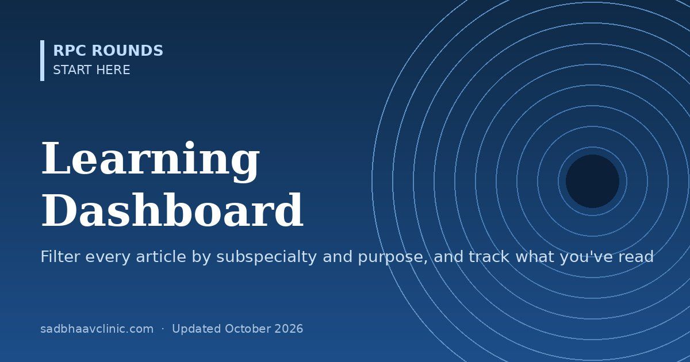

Last updated: October 2026
How to use this page: tick one or more subspecialties and one or more purposes (for example, Glaucoma + Classifications & gradings) to see every matching RPC Rounds article. Within a group, ticks widen the list; across the two groups, they narrow it. You can also mark articles as read: your progress is saved in this browser only.
Preparing for an exam outside India? See the OKAP, FRCOphth and ICO guide. Indian exam aspirants can start with the AIOS-OKAT guide and exam resources.
Tags are editorial and approximate: an article is tagged with its main subspecialty and purpose, and some articles span several. Your "read" ticks are stored only in this browser and are not sent anywhere.
Quick reference: Clinic Desk Reference: printable one-screen cards. More one-screen cards in the Clinic Desk Reference.
📘 Want more exam-ready material? See Ophthalmology Explorer on Kindle, or browse all my books.
Looking for an eye specialist in Ahmedabad? Meet Dr. Dhaval Patel or book a consultation with Dr. Dhaval Patel.